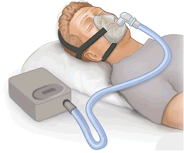

<div>
	<md-content>
		<div class="md-padding">
			<h2 class="text-center">What is a CPAP Machine?</h2>
			<br/>

			<h4>CPAP Info</h4>
			<br/>

			<p>Continuous positive airway pressure (CPAP) therapy is a common treatment for obstructive sleep apnea. It includes a small machine that supplies a constant and steady air pressure, a hose, and a mask or nosepiece. A sketch of the machine in use can be seen below.</p>
			<br/>

			<div class="text-center">
				
			</div>

			<br/>

			<h4>Sleep Apnea</h4>
			<br/>

			<p>According to Mayo Clinic, a trusted medical resource, "sleep apnea is a potentially serious sleep disorder in which breathing repeatedly stops and starts. You may have sleep apnea if you snore loudly, and you feel tired even after a full night's sleep."</p>

			<p>They go on to suggest that there are three major types of sleep apnea:</p>
			<ol>
				<li>"<strong>Obstructive sleep apnea : </strong>the more common form that occurs when throat muscles relax."</li>
				<li>"<strong>Central sleep apnea : </strong>which occurs when your brain doesn't send proper signals to the muscles that control breathing."</li>
				<li>"<strong>Complex sleep apnea syndrome : </strong>also known as treatment-emergent central sleep apnea, occurs when someone has both obstructive sleep apnea and central sleep apnea."</li>
			</ol>
			<br/>

			<h4>Where do I come in?</h4>
			<br/>

			<p>All of these could benefit from the use of a common CPAP machine. These machines can often be difficult to attain, as they can be quite expensive. If you are capable of donating an out of use machine, please look into our <a ui-sref="donate">Donate Today</a> section. If you need assistance with acquiring a machine, please look into our <a ui-sref="donate">Receive Aid</a> section.</p>

			<p>There are many other similar machines that the bank carries/accepts, that are slightly different. These include CPAP, BiPAP, auto-CPAP, auto-BiPAP, ASV (adaptive servo-ventilation) and AVAPS (average volume assured pressure support) machines.</p>
		</div>
	</md-content>
</div>